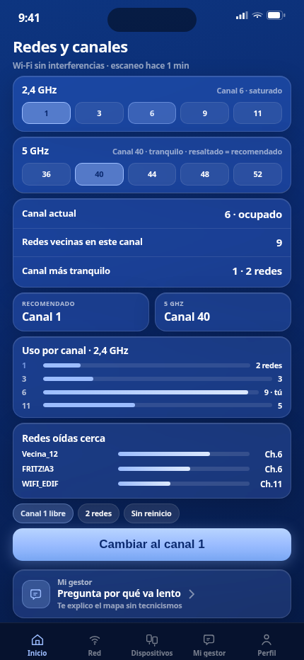
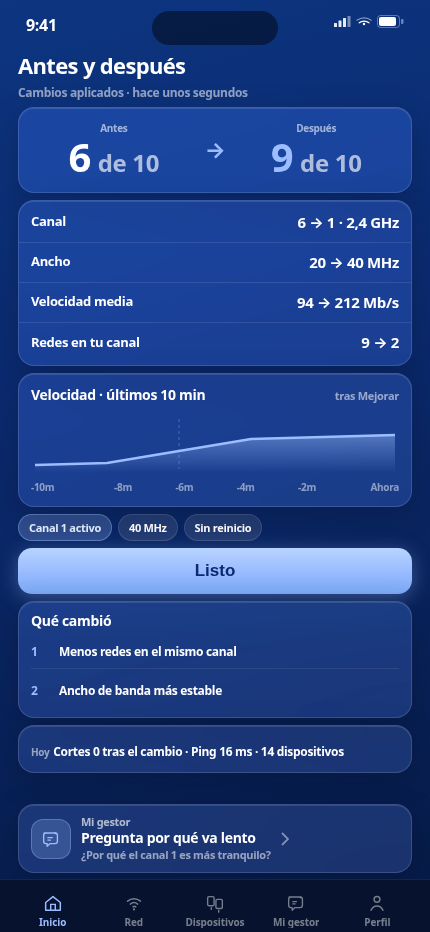
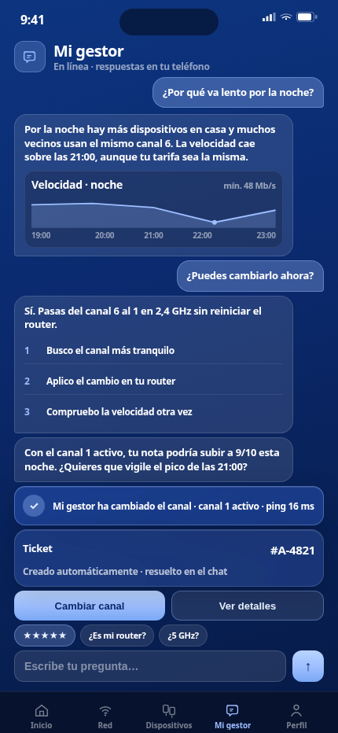

Tu Wi‑Fi puede ir mejor. OrroFi sabe cómo.
La aplicación escucha el aire alrededor de tu casa, encuentra lo que estorba a la red y lo pone en orden con un toque. Sin ajustes, sin llamadas a soporte, sin un técnico en la puerta.

Por qué el Wi‑Fi se atasca en casa
Anochece. Todos en casa: alguien ve una película, alguien está en una videollamada, los niños juegan en línea. Y justo entonces la imagen se rompe en cuadros y la voz al teléfono empieza a entrecortarse.
Lo más habitual es que no sea la tarifa ni el router. Al otro lado de la pared, un piso más arriba y cruzando la calle, viven vecinos, y sus routers hablan en la misma onda que el tuyo. El aire de la casa se parece a una cocina estrecha donde todos hablan a la vez: cada uno oye a todos y nadie se entiende.

Wi‑Fi sin interferencias
OrroFi mira qué redes suenan alrededor y en qué canales. Un canal es la franja del aire por la que el router habla con tus dispositivos. La aplicación elige el canal más silencioso y pasa a él tu router. Tú no configuras nada: la red vuelve a ser rápida y estable.

La nota de la red y el botón «Mejorar»
Lo complicado lo redujimos a un número. Abres la aplicación y ves: «Tu Wi‑Fi: 6 de 10». Debajo, en palabras sencillas, qué estorba. Y al lado el botón «Mejorar». Pulsas, esperas unos segundos y ves si la nota ha mejorado. En el ejemplo, sube a 9 de 10; el resultado depende de tu casa.


Los vecinos con OrroFi no se molestan Pronto
Esto es lo que estamos preparando. Cuando varias familias con OrroFi viven cerca, sus routers se ponen de acuerdo y se reparten canales distintos para no estorbarse. Cuantos más vecinos con OrroFi, más canales se pueden repartir. Una buena red pasa a ser cosa de toda la casa y de toda la calle.

Y esto no es todo
- Quién está en tu red. Todos los dispositivos con nombres claros: «Televisor del salón», «Teléfono de María», «Cámara de la entrada». Un desconocido se nota enseguida.
- Pausa. Cena, deberes, sueño: el internet de la tablet de los niños se detiene con un toque.
- Red de invitados. Los invitados tienen su propio Wi‑Fi y tu contraseña se queda contigo.
- Velocidad. Una medición honesta desde el teléfono, en cualquier habitación.

En casa y en el móvil, todo es uno
¿El teléfono en casa coge mal y en la habitación del fondo la llamada se corta a media frase? OrroFi lo nota solo y te dice cómo ayudar: activar las llamadas por Wi‑Fi, para que la voz vaya por la red de casa y no por una antena cansada. Los gigas que quedan, los bonos, las facturas y todas las líneas de la familia están en un solo sitio, junto a tu Wi‑Fi. No hace falta otra aplicación en el teléfono.
Y si algo va lento, pregúntale a Mi gestor. Él mismo verá si es el Wi‑Fi, la red móvil o un bono acabado, y te responderá con una frase clara.

Y esto no es todo
- Mi gestor. El asistente responde a cualquier hora, y si hace falta una persona, le pasa la conversación con todo el historial.
- Facturas y servicios. Tarifa, facturas, líneas móviles y la visita del técnico en un mismo sitio.

Tus datos, con claridad
Para mostrarte tu red, guardamos en nuestros servidores los nombres y las direcciones de tus dispositivos. La contraseña del router se guarda cifrada en tu iPhone y no se envía a nuestros servidores. Usamos estos datos solo para mostrarte tu red.
Cómo empezar
- Instala OrroFi.
- Entra con tu número de teléfono: el código llega por SMS.
- En casa, pulsa «Comprobar mi red».
Preguntas y respuestas
Tengo un iPhone, ¿la aplicación verá a los vecinos?
Sí. Las redes vecinas las ve tu router, y la aplicación muestra el panorama y pone orden.
¿Hay que entender de técnica?
No. Te basta un número y un botón.
¿Es seguro?
El router solo cambia los ajustes cuando tú se lo pides. Los nombres y las direcciones de tus dispositivos se guardan en nuestros servidores para mostrarte tu red, y la contraseña del router no se envía a nuestros servidores.